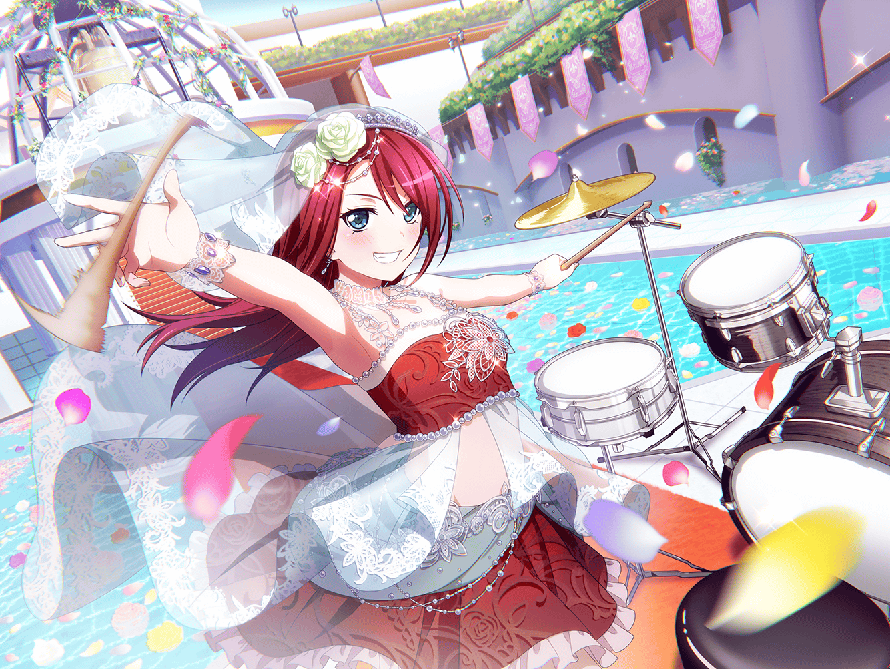

商店街
巴
よっし、あこに頼まれてた限定のスイーツも買えたし、
さっさと帰るとするかな～
巴
ん？
あそこでポスター見てるのは……
巴
やっぱり、{{userName}}さんか。
どーも
巴
この沙綾、キレイだよな〜。
じっくり見ちゃう気持ちもわかるよ。
普段と雰囲気も全然違うしな
巴
アタシ、事前に知らなかったら、
ひと目見ただけじゃ誰だかわからなかったかもしれないよ
巴
沙綾がウェディングドレスを着てる理由か……？
あはは、いろいろあったみたいだぜ？
巴
そもそもの発端は商店街の知り合いに、
モデルを頼まれたからって言ってたな
巴
まぁ、沙綾の家も商店街の店だからな。
頼まれたら、断れなかったんじゃないか？
巴
いや、実はさ……
偶然、撮影の日に現場に出くわしちまって……
巴
ホント、あの時はびっくりしたよ。
あこと一緒に出かけていたら、
いきなりドレスを来た沙綾を見かけたんだから
巴
だろー？
ビックリするだろ？
巴
いやいや、一瞬本当に誰だかわからなかったけど、
沙綾だってわかった瞬間に頭が混乱しちゃってさ
巴
隣に瀬田先輩だっていたのにな。
その時のアタシは完全に思考がおかしくて……
巴
『え？ 結婚するのか？？』って、
思いっきり勘違いしちゃったよ
巴
笑えるだろ～？
いやぁ、今思い出すとアホすぎて恥ずかしいくらいだよ
巴
それで、どういうことなのか聞こうと思って、
あこと一緒に撮影現場に突撃したんだ。
巴
そうそう。
本当にドラマみたいに突撃したんだよ。
『ちょっと待ったあ〜！』みたいなさ
巴
……つか、本当にアタシ、混乱してたんだな
巴
だって、新郎役は瀬田先輩だったんだぜ？
冷静に考えれば、
沙綾と瀬田先輩が結婚なんてするわけないもんな
巴
はぁ……
巴
まあ、過ぎたことはしょうがない。
これ以上過去のアタシを責めてもしょうがない、ってことに
しとこっかな
巴
こういう言葉を使っていいのかわかんないけど、
２人、本当にお似合いだったんだよな〜
巴
こう、絵になるっていうかさ
巴
写真でも充分綺麗だしカッコいいけど
現場で見た時はさらに綺麗でカッコよかったからな
巴
……けど、ウェディングドレスを着てるのを見てさ、
ガラにもなくアタシやAfterglowのメンバーの将来なんかを
想像しちゃったよ
巴
何年かしたらさ、本当に
いつかああいうドレスを着る日がくるのかな……とか
巴
例えば蘭が……
そうなった時、アタシ達の関係はどうなるんだろう？
巴
やっぱり、変わっちまうのかな？
みんながそれぞれの道を選んで……
巴
疎遠になったり、するのかなあ……
巴
……いや、考えるまでもなかったな
巴
何があってもアタシ達の関係は変わらない
これまでも、これからもずっと一緒だ！
巴
……あ。悪い、ちょっと１人で突っ走ってた。
置いてけぼりにしちゃったかな
巴
別になんでもないんだ。
ていうか、心配する必要もなかったってハナシ
巴
おっと、早く帰らないと
スイーツを待ってるあこが可哀想だな
巴
んじゃ、アタシはそろそろ帰るわ。
長話につきあってくれて、ありがとな